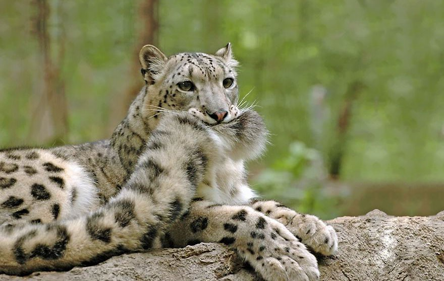
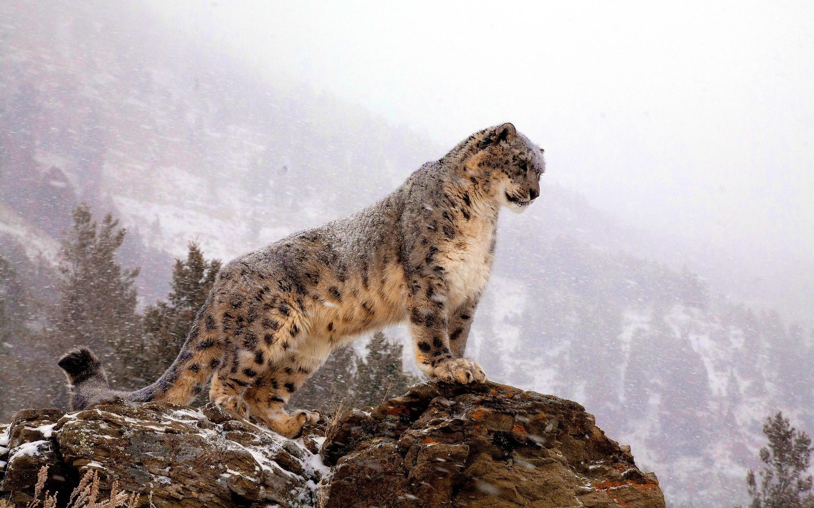
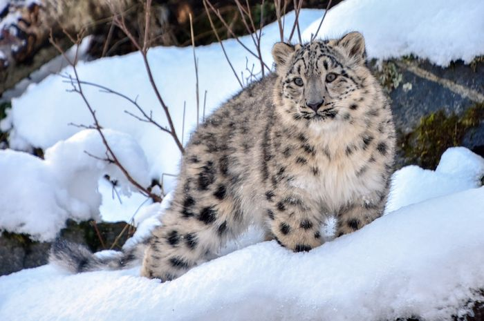
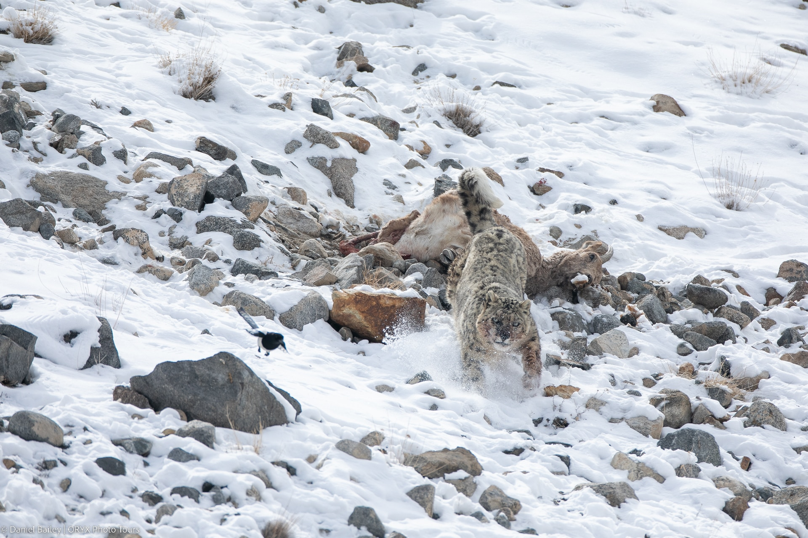

(Snow Leopard) - "Bóng Ma Núi Tuyết"
Thông tin mở đầu về Báo Tuyết 🐆
Báo Tuyết (Snow Leopard) (Panthera uncia) là loài động vật có vú thuộc họ Mèo (Felidae), nổi tiếng với bộ lông dày, đuôi dài và khả năng thích nghi tuyệt vời với môi trường núi cao khắc nghiệt. Chúng sống chủ yếu ở các dãy núi Trung Á, bao gồm dãy Himalaya, Karakoram, Pamir và Altai.
Với biệt danh "Bóng Ma Núi Tuyết", báo tuyết hiếm khi bị bắt gặp trong tự nhiên do khả năng ngụy trang hoàn hảo và lối sống đơn độc. Chúng là biểu tượng của sự bí ẩn và sức mạnh trong văn hóa của nhiều dân tộc vùng núi.

🍖 Chế độ ăn uống:
Thức ăn chủ yếu: Các loài động vật có móng guốc như dê núi, cừu xanh Himalaya, cùng với thỏ, chim và đôi khi là gia súc nuôi trong làng.
Thói quen săn mồi: Báo tuyết có thể nhảy xa tới 15 mét để vồ mồi, thường săn vào bình minh và hoàng hôn.
Pha săn mồi kinh điển của báo tuyết
🏔️ Môi trường sống:
Khu vực phân bố: Chủ yếu ở các dãy núi cao Trung Á, ở độ cao từ 3.000 - 4.500 mét so với mực nước biển.
Điều kiện khắc nghiệt: Báo tuyết sống ở các vùng có nhiệt độ cực lạnh và địa hình hiểm trở, nơi ít có loài động vật ăn thịt khác sinh sống.

🛡️ Tình trạng bảo tồn:
Nguy cơ tuyệt chủng: Hiện đang ở mức "Dễ Tổn Thương" (Vulnerable) theo IUCN.
Nguyên nhân suy giảm: Săn trộm, mất môi trường sống và xung đột với con người (do chúng săn gia súc).
Nỗ lực bảo tồn: Các chương trình bảo tồn ở Trung Á, hợp tác quốc tế và xây dựng các khu bảo tồn thiên nhiên.

🌍 Vai trò trong hệ sinh thái:
Kiểm soát số lượng động vật ăn cỏ: Giúp duy trì sự cân bằng trong hệ sinh thái núi cao.
Bảo vệ đa dạng sinh học: Khi bảo vệ báo tuyết, đồng nghĩa với việc bảo vệ toàn bộ môi trường sống của chúng, bao gồm nhiều loài động thực vật khác.

Bonus thêm về báo tuyết =))
by: Thanh Đẹp Trai